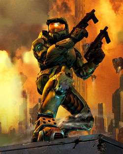

Master Chief
The Cyborg-Man who saved the Universe (numerous times)

Master Chief, also known as John-117, is the protaganist and main character
in the Halo franchise. He is the main character in both the original Halo Trilogy and the Reclaimer Saga.
He is a SPARTAN-II commando and holds the rank of Master Chief Petty Officer in the UNSC Special Naval Warfare Command.
He has saved humanity from destruction on multiple occasions, and was the leading force in bringing an end to the Covenant-Human war.
- 2511- Born in Elysium City on the colony world Eridanus II.
- 2517 - John-117 is abducted along with other portential SPARTAN II candidates.
- 2525 - The Spartan candidates undergo biological augmenation. Of 75 candidates, only 33 both survive the process and remain active. John-117 is 14 years old.
- 2525 - Participates in his first active military operations for the UNSC.
- 2552 - The final events in the "Fall of Reach" story take place. Master Chief and the other Spartans participate in the doomed defense of the important military hub world: planet Reach. This battle immediately precedes the events of the first Halo.
- 2552 - Events of Halo: Combat Evolved. This is where most of us are introduced to Master Chief as we know and love him today.
2553 - Ending of Halo 3. Master Chief successfully defeats the remaining Covenant forces loyal to the Brutes and Prophets. Master Chief, with the help of the Arbiter, also prevent the Flood from taking over all life in the Universe, and without activating the Halo rings. In the final cutscenes, Master Chief is presumed KIA back on Earth after being separated from the Arbiter. However, he and Cortana are stranded in space. His final words to her before entering cryo-sleep are: "Wake me up when you need me."
Here's a timeline of Master Chief's Life and Major Accomplishments
“He is neither the smartest, nor the fastest, nor the strongest of the Spartans. But he is the bravest, and quite possibly the luckiest. And in my opinion, he is the best.”
-— Dr. Catherine Halsey to Cortana